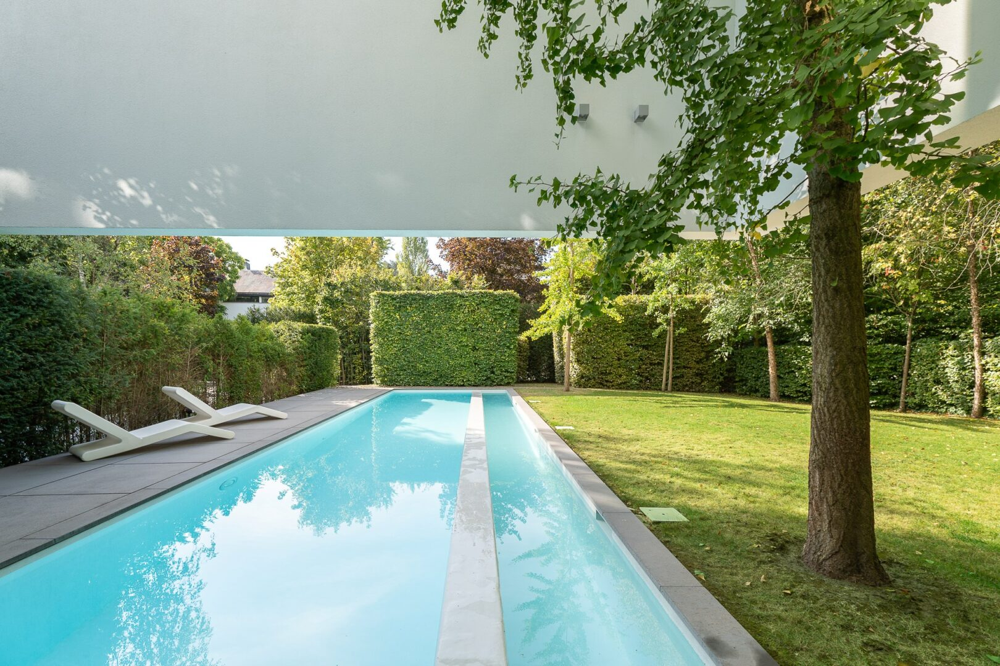

01
Séjour

 État actuel
Mise en scène
État actuel
Mise en scène
Un cheminement minéral entre les haies de hêtres taillées. La maison se révèle progressivement, dissimulée dans la végétation.
État actuel
Mise en scène

 Jour
Nuit
Jour
Nuit
Faites défiler — la villa se déploie horizontalement.
Le volume supérieur en surplomb au-dessus du bassin : la signature de l'écriture Erpicum.

Plan de travail monolithique en pierre cendrée, quinze mètres sans rupture, batterie Miele encastrée.
Pièce traversante, foyer ouvert, parquet patiné. La pièce de vie centrale, sous l'anneau.

Eau bleu turquoise, plafond angulaire en porte-à-faux, vis-à-vis sur le jardin par une longue baie.

Marches en béton ciré, garde-corps lame blanche. La verticalité comme respiration.

Bassin allongé sous le porte-à-faux, dalles cendrées, écran végétal continu.
Une signature d'architecte, des matériaux nobles, deux piscines, un parc paysager — chaque détail compte.
Œuvre signée 2007, deux anneaux entrelacés.
Volume supérieur en surplomb sur le bassin.
Eau bleu turquoise, plafond angulaire.
Bassin allongé sous le volume blanc.
Toiture en panneaux, autoconsommation.
Suite parentale et chambres d'enfants.
Sols et escaliers en finition continue.
1.900 m² d'écrin végétal continu.
Quartier rare, à dix minutes du centre.
Cliquez sur une image pour l'ouvrir en plein écran.

Le quartier Prince d'Orange est l'un des plus rares de Bruxelles : rues bordées d'arbres centenaires, propriétés discrètes, frontière nord du Bois de la Cambre. La Maison Erpicum y prend place sur un terrain paysager de 1.900 m², à quelques minutes du centre.
Christie's International Real Estate